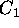
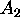

When the tire develops a sideslip velocity denoted by v in Figure 1, a lateral force will develop opposing the sideslip velocity. This lateral force is a function of slip angle, where slip angle is defined as
The primary forces during lateral maneuvering, acceleration, and braking are generated by tires as a function of the driver input. The linear analysis of a tire model commonly considers constant tire side force coefficients at small force output range. The linear tire model doesn't consider longitudinal tire forces due to the complex interactions between lateral and longitudinal tire forces. Thus, linear tire model is suitable for analyzing a stable vehicle behavior under the assumption of small steering and acceleration. Most of AHS (Automated Highway System) utilize the linear tire model for its simplicity. In our driving simulator, it is very important to describe the exact behavior of a vehicle in any driving scenario including inclement driving conditions which may require severe steering, braking, acceleration, and other driving related operations. Therefore, in order to simulate the complete vehicle operational range, it is important to properly model tire forces containing the interactions of longitudinal and lateral forces from small levels through saturation. The tire model used in the driving simulator is based on a paper from U.S Department of Transportation [1]. The paper presents complete computations of the tire forces by using the parameters available from various tire test results including comprehensive Calspan model and data. The tire model developed in this paper provides a useful force producing element for a full driver/vehicle model as in our driving simulator. In the following sections, physical and analytical tire model is presented with basic tire variables followed by the identified model equations and resulting plots. Especially, the tire force plots provide not only the validation of this tire model, but also insights into tire effects on vehicle response and stability.
The longitudinal and lateral forces generated by a tire are a function of the slip angle and longitudinal slip of the tire relative to the road.
Figure 1: Basic
Variables of Tire
The longitudinal slip of the tire is defined as a difference between the tire tangential speed and the speed of the axle relative to the road, which is represented by the following equation.
where S is the longitudinal slip, R is the radius of the
wheel,
is the angular velocity, and u is the speed of the
axle illustrated in Figure 1. The value of the longitudinal
slip is limited such that
 . For braking, axle speed is
used in the denominator so that longitudinal slip is 1 when
is zero. Slip has the opposite sign when tracking
force is generated.
. For braking, axle speed is
used in the denominator so that longitudinal slip is 1 when
is zero. Slip has the opposite sign when tracking
force is generated.
When the tire develops a sideslip velocity denoted by v in Figure 1, a lateral force will develop opposing the
sideslip velocity. This lateral force is a function of slip angle,
where slip angle is defined as
where v is the sideslip velocity, and u is the speed of the axle. The value of the slip angle is limited such that .
The previous theoretical developments lead to a complex, highly
non-linear composite force as a function of composite slip. It is
convenient to define a saturation function,
 , to obtain
a composite force with any normal load and coefficient of friction
values such that
, to obtain
a composite force with any normal load and coefficient of friction
values such that
In order to derive a simplified computational formulas for our driving simulator, the complex polynomial expression can replaced the complex saturation function with all the considerations in previous section within the agreeable error ranges. The polynomial expression of the saturation function is presented by
where  , , , and are parameters fixed to the specific tires. Table 1 summarizes the tire parameters of 3 different type of tires. RWD bias ply tire model is used for all the driving simulation presented in this paper. The calculation of the composite slip shown in Equation 7 should be modified because the tire contact patch length varies depending on the normal load. The tire contact patch length are calculated using following two equations.
where
is the tire contact patch,
is a tread width
, and
 is a tire pressure. The values of
and
are
also shown in Table 1.
The lateral and longitudinal stiffness coefficients are a
function of tire contact patch length and normal load of the tire
as expressed as follows.
is a tire pressure. The values of
and
are
also shown in Table 1.
The lateral and longitudinal stiffness coefficients are a
function of tire contact patch length and normal load of the tire
as expressed as follows.
where the values of , ,  , and CS/FZ are given in Table 1. Then the composite slip calculation becomes
is a nominal coefficient of friction and has a value of 0.85 for normal road conditions, 0.3 for wet road conditions, and 0.1 for icy road conditions.
Table 1: Parameters for Tire Model Equations [1]
Figure 4: Procedures
of Tire Force Calculations
Given the polynomial saturation function in Equation 10 and lateral and longitudinal stiffness, the normalized lateral and longitudinal forces are derived by resolving the composite force into the side slip angle and longitudinal slip ratio components.
lateral force has an additional components due to the tire camber angle, , which is modeled as a linear effect. Under significant maneuvering conditions with large lateral and longitudinal slip, the force converges to a common sliding friction value. In order to meet this criteria, the longitudinal stiffness coefficient is modified at high slips to transition to lateral stiffness coefficient as well as the coefficient of friction defined by the parameter .
The constant value of 0.124 was used for in the tire model. The summarized procedures to calculate the longitudinal and lateral forces are shown in Figure 4. As a result in this section, the longitudinal and lateral tire force plots are included in Figure 5 through Figure 8 for normal driving conditions of .
Figure 5: Normalized
Longitudinal Force vs. Slip Angle
Figure 6: Normalized
Lateral Force vs. Slip Angle

Figure 7: Normalized
Longitudinal Force vs. Longitudinal Slip
Figure 8: Normalized
Lateral Force vs. longitudinal SlipReferences